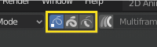
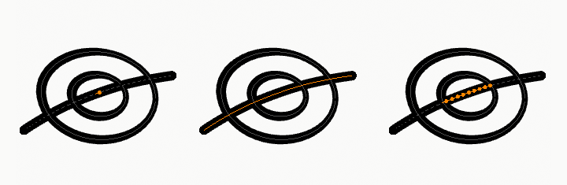

选择¶
参考
- 模式
编辑模式
- 菜单
- 热键
1, 2, 3

选择编辑模式按钮。¶
在编辑模式中有三种不同的选择模式。您可以通过选择标题中的三个按钮的某个按钮来进入不同的模式。
- 点
选择单独的点。
- 笔画
选取整个笔画。
- 两者间的点
选取其他笔画之间的所有点。

点、笔画和笔画之间的选择。¶
Select Vertex Color¶
参考
- 模式
Vertex Paint Mode
- 菜单
Selects all points with a similar vertex color as the current selection.
- Tolerance
How similar colors are allowed to be; higher values select a wider range of colors.
扩展/缩减选择¶
参考
- 模式
编辑模式
- 菜单
- 热键
Ctrl-NumpadPlus, Ctrl-NumpadMinus
这些工具的目的是减少或扩大目前笔画中的选择 (即它们绝不会从笔画上 "移出" 或者 "跳到" 别的笔画，在同一个对象上)。
- 扩展选区
对于每个选定点, 选择 全部 它的关联点 (i.e. 1个或者2个...)。
- 缩减选区
对于每个选定的点，如果选择了与此点关联的 全部 点，请保持此选择。 否则，对其取消选择。
Hint
当选择笔画上 全部 的点时, 什么都不会发生 (至于 减选 , 所有衔接的点总是被选择, 同样, 多选 什么也不会选择)。相反，当没有选择点时也是如此。